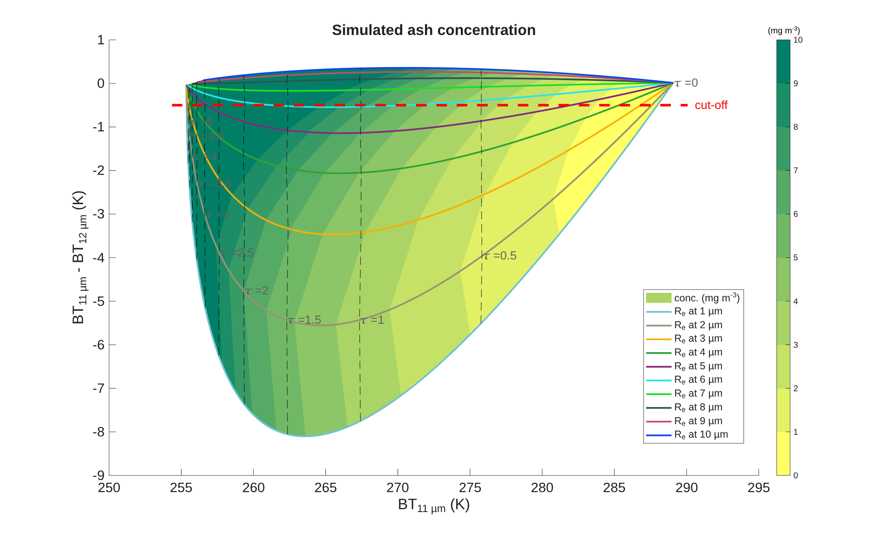
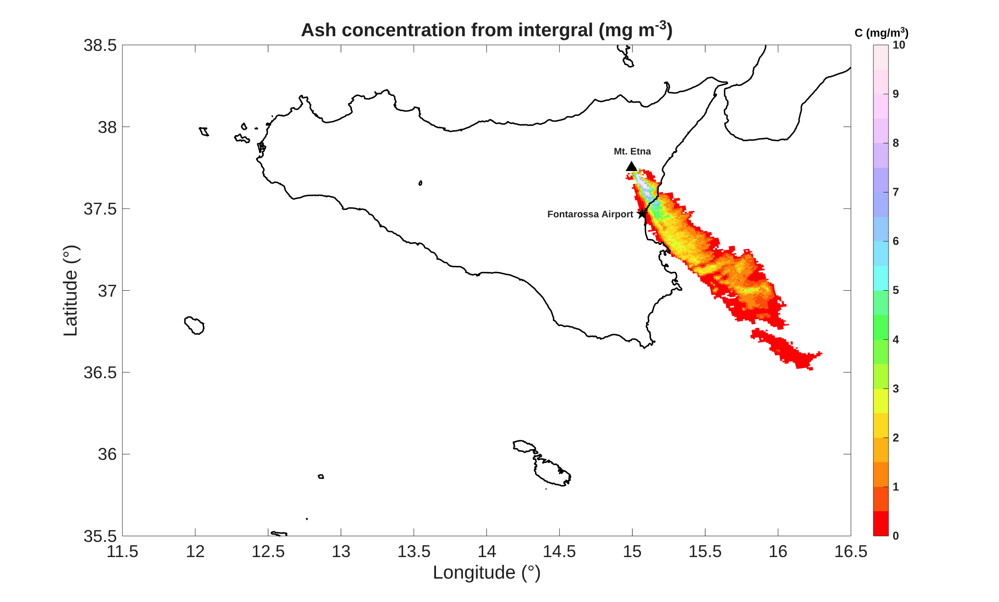
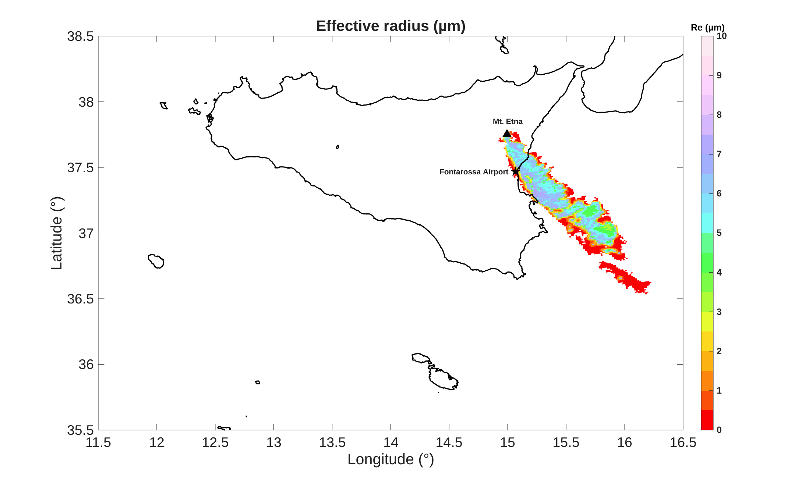

Field of study
My research focuses on the remote sensing of volcanic particles
from ground- and satellite-based systems using physical-electromagnetic
models and statistical learning theory.
I mainly develop advanced algorithms for
the microphysical modelling of volcanic clouds,
observed by satellite radiometers in the Thermal-Infrared
and Micro- Microwave spectrum region.
Pop me a message if you want to discuss about science and join me on a journey to discover volcanoes!
Mt. Etna (Italy) 24th Novemeber 2006 erutpion:
Figure 1 shows radiative transfer simulations assuming an omogeneous layer between 6 and 7 km altitudes. This example shows simulated pure ash concentrations (mg m-3) for the volcanic eruption of 24.11.2006 at Etna volcano (Italy).

From the simulations (forward-modelling) it is possible to retrieve properties of the volcanic clouds as the ash concentration (mg m-3) and effective radius (μm). The two figures below show the estimated ash concentration and effective radius for the volcanic cloud observed by the Aqua-MODIS spectro-radiometer over the sicilian island.

